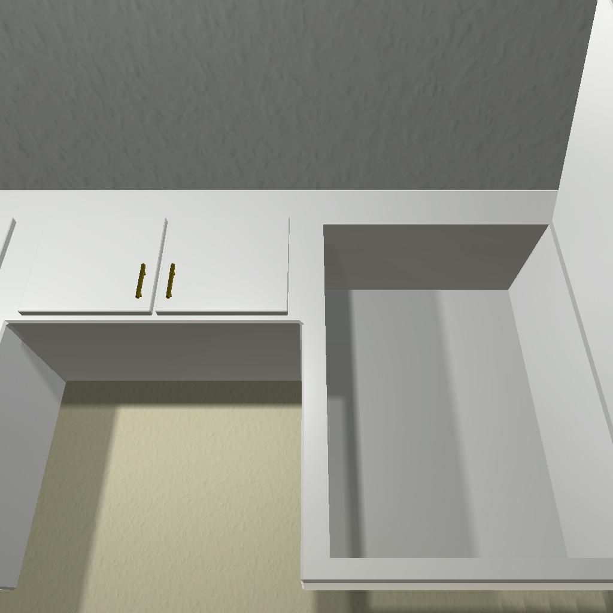

---------------------------------------------------------task: 18---------------------------------------------------------
--------------------------------------------------------------------------------------------------------------------------------------------------------------------
--------------------------------------------------------------------------------------------------------------------------------------------------------------------
Step:--------------------------------------------------------------------------12-------------------------------------------------------------------------------
----------------------------------------
VLM Prompt:
**Task**
Please perform as an embodied AI agent. Our final objective is to cool some pot and put it in cabinet. Below is the plan for completing the task, the current observation, alongside historical data and admissible actions for the next step. Please determine the best action for the next step!
**Plan**
Below is a detailed step-by-step plan to complete the task.
1. Find a pot.
2. Pick up the pot.
3. Find a fridge.
4. Cool the pot with the fridge.
5. Find a cabinet.
6. Place the cooled pot in the cabinet.
**Current Observation**
Displayed is an image capturing the current position of the agent.
**History Information**
Displayed are the previous observations with their corresponding actions.
Current State 1:
1. Place: Near the sink and coffee machine
2. Step Index in Plan: 1
3. Objects: Pot, sink, coffee machine, cabinets, countertops
4. Action: Go to countertop 1
Current State 2:
1. Place: Kitchen Countertop
2. Step Index in Plan: 3
3. Objects: Kitchen Appliances, Pot
4. Action: go to fridge 1
Current State 3:
1. Place: Next to a fridge
2. Step Index in Plan: 4
3. Objects: Fridge
4. Action: Open fridge 1
Current State 4:
1. Place: Fridge 1
2. Step Index in Plan: 4
3. Objects: Pot, Fridge 1
4. Action: Go to cabinet 1
Current State 5:
1. Place: In front of cabinet 1
2. Step Index in Plan: 4
3. Objects: Cooled pot
4. Action: Open cabinet 1
Current State 6:
1. Place: In front of cabinet 1
2. Step Index in Plan: 5
3. Objects: Cooled pot, cabinet 1
4. Action: Close cabinet 1
Current State 7:
1. Place: In front of a closed cabinet
2. Step Index in Plan: 5
3. Objects: Cabinet 1, Cabinet 2, Pot
4. Action: Go to cabinet 2
Current State 8:
1. Place: In front of cabinet 2
2. Step Index in Plan: 5
3. Objects: Cooled pot, cabinet 2
4. Action: Open cabinet 2
Current State 9:
1. Place: In front of cabinet 2
2. Step Index in Plan: 6
3. Objects: Cabinet 2, cooled pot
4. Action: Close cabinet 2
Current State 10:
1. Place: In front of closed cabinets
2. Step Index in Plan: 6
3. Objects: Cooled pot, cabinet 2
4. Action: Go to cabinet 2
Current State 11:
1. Place: In front of closed cabinets
2. Step Index in Plan: 6
3. Objects: Cooled pot, Cabinet 2
4. Action: Take nothing from cabinet 2
Current State 12:
1. Place: In front of closed cabinets
2. Step Index in Plan: 6
3. Objects: Cooled pot
4. Action: Open cabinet 2
**Admissible Actions**
(1): go to cabinet 1
(2): go to cabinet 3
(3): go to cabinet 4
(4): go to cabinet 5
(5): go to cabinet 6
(6): go to countertop 1
(7): go to coffeemachine 1
(8): go to cabinet 7
(9): go to toaster 1
(10): go to cabinet 8
(11): go to sink 1
(12): go to fridge 1
(13): go to microwave 1
(14): go to garbagecan 1
(15): go to cabinet 9
(16): go to cabinet 10
(17): go to countertop 2
(18): go to cabinet 11
(19): go to cabinet 12
(20): go to drawer 1
(21): go to countertop 3
(22): go to drawer 2
(23): go to cabinet 13
(24): go to sinkbasin 1
(25): go to cabinet 14
(26): go to drawer 3
(27): go to stoveburner 1
(28): go to stoveburner 2
(29): go to stoveburner 3
(30): go to cabinet 15
(31): go to stoveburner 4
(32): go to cabinet 16
(33): go to cabinet 17
(34): go to cabinet 18
(35): go to cabinet 19
(36): go to cabinet 20
(37): go to shelf 1
(38): go to shelf 2
(39): go to shelf 3
(40): close cabinet 2
(41): take nothing from cabinet 2
**Analysis Guideline**
1. Analyze the **History Information** and determine our current step in the plan and our current place.
2. List all visible objects related to the task in the current observation.
3. Analyze the objects in the current observation based on the history and the requirements for the current step, and then determine if we can complete the step with the current observation.
4. Analyze and decide on the most appropriate action to take.
5. Summarize the analysis using the following format: "Analysis: [The summarization of the analysis], The Most Appropriate Action: (i which is the integer.): [Selected action]"
**Notes**
1. We must complete each step of the plan in order and cannot skip steps when the previous ones are not finished.
2. For "Go to" actions listed as "go to xxx [n]", interpret this as there are n distinct actions available: "go to xxx 1", "go to xxx 2", ..., "go to xxx n". Select one specific action from these options instead of using "go to xxx [n]".
3. If receptacles such as drawers, cabinets, and so forth are closed in the current observation, we may try to open them.
4. Pay attention to synonyms and ensure clarity in the terms used.
5. If there is no history available, we are at the first step and the current place is "Unknown".
6. The most appropriate action must be in the **Admissible Actions**, and we cannot generate a new action that is not in the **Admissible Actions**.
**Answer**
Please select the most suitable action by following the **Analysis Guideline**, keeping the above **Notes** in mind.
----------------------------------------
----------------------------------------
VLM Response:
Analysis: According to the History Information, we are currently at step 6 of the plan, which is "Place the cooled pot in the cabinet." The current observation shows us in front of closed cabinets, and the history indicates we have just opened cabinet 2. Since the last action was to open cabinet 2, the next logical step would be to place the cooled pot inside cabinet 2. However, the image shows closed cabinets, meaning the cabinet has been closed again without the pot being placed inside. The Most Appropriate Action: (40): close cabinet 2 seems redundant because the cabinet already appears closed. Action (41): take nothing from cabinet 2 is not relevant as we need to place the pot into the cabinet. None of the "go to" actions seem relevant since we're already at the cabinet where we need to place the pot. Therefore, it seems there might be an error in the admissible actions or the observation, as the necessary action of placing the pot in the cabinet is not listed. To resolve this, we might need to open cabinet 2 again and then place the pot inside.
The Most Appropriate Action: (40): close cabinet 2
----------------------------------------
----------------------------------------
>>> Refine VLM Response and Get Pure Action: close cabinet 2 seems redundant because the cabinet already appears closed
----------------------------------------
-----------------------------------------------------------------
Running time: 13.378440856933594 seconds
Total Money: 9.140049999999992
-----------------------------------------------------------------
-----------------------------------------------------------------
Summarization Prompt:
**Context**
Analysis: According to the History Information, we are currently at step 6 of the plan, which is "Place the cooled pot in the cabinet." The current observation shows us in front of closed cabinets, and the history indicates we have just opened cabinet 2. Since the last action was to open cabinet 2, the next logical step would be to place the cooled pot inside cabinet 2. However, the image shows closed cabinets, meaning the cabinet has been closed again without the pot being placed inside. The Most Appropriate Action: (40): close cabinet 2 seems redundant because the cabinet already appears closed. Action (41): take nothing from cabinet 2 is not relevant as we need to place the pot into the cabinet. None of the "go to" actions seem relevant since we're already at the cabinet where we need to place the pot. Therefore, it seems there might be an error in the admissible actions or the observation, as the necessary action of placing the pot in the cabinet is not listed. To resolve this, we might need to open cabinet 2 again and then place the pot inside.
The Most Appropriate Action: (40): close cabinet 2
**Summary Format**
1. Place: [Specify the current location]
2. Step Index in Plan: [Dispkay the current step number in the plan before taking the current action]
3. Objects: [List the objects relevant to the task]
4. Action: [Describe the most appropriate action without the "(x)" and keep the integer of the object]
Please analyze the **Context** and summarize the analysis using the **Summary Format**.
-----------------------------------------------------------------
-----------------------------------------------------------------
Summarization Response:
1. Place: In front of closed cabinets
2. Step Index in Plan: 6
3. Objects: Cooled pot, Cabinet 2
4. Action: Close cabinet 2
-----------------------------------------------------------------
-----------------------------------------------------------------
Text Observation:Nothing happens.
-----------------------------------------------------------------
UNSUCCEED